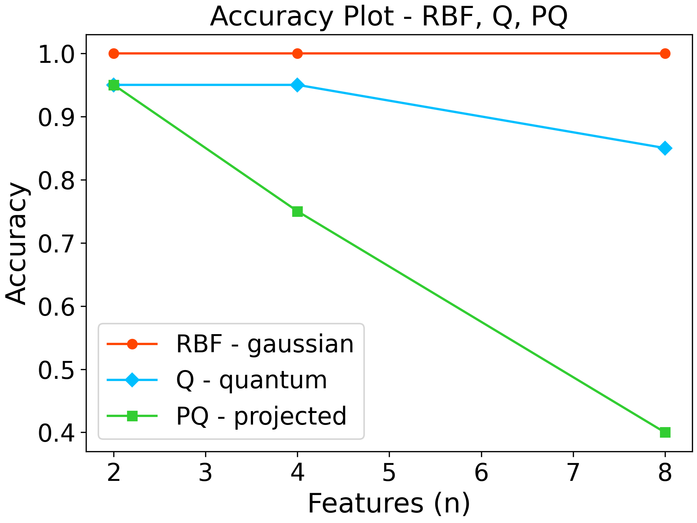
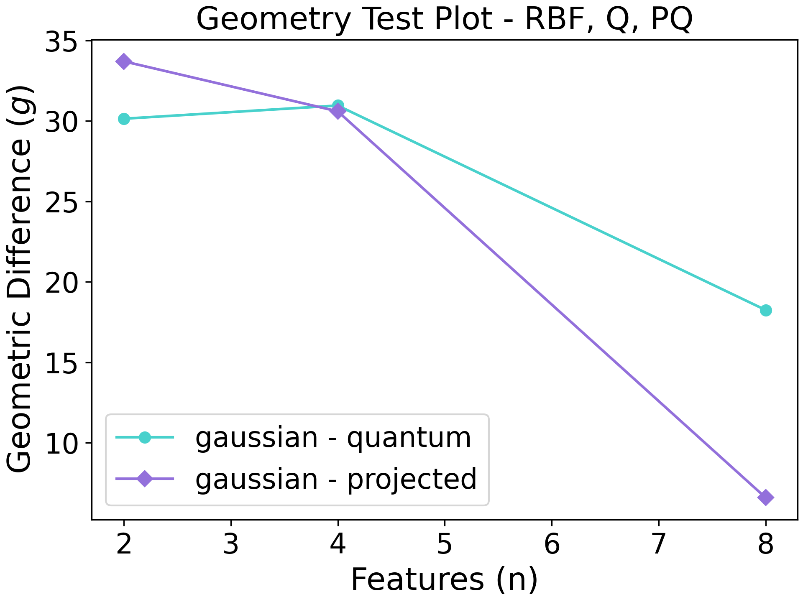

How to use it
Installation
The software has been tested on Python 3.9.10. We recommend using this version or a newer one.
You can install the software directly from the repository using the command:
python3 -m pip install https://github.com/CERN-IT-INNOVATION/QuASK/releases/download/1.0.0-beta/quask-1.0.0b0-py3-none-any.whl
If the software shows dependencies related problems, download the repository and from the main directory run the command:
python3 -m pip install -r requirements.txt
Usage
Use quask as a library of software components
QuASK can be used as a library to extend your own software. Check if everything’s working with:
pythonimport numpy as npimport quask.metricsA = np.array([[1,2], [3,4]])B = np.array([[5,6], [7,8]])print(quask.metrics.calculate_frobenius_inner_product(A, B))Use quask as a command-line interface tool
QuASK can be used as a command-line interface to analyze the dataset with the kernel methods. These are the commands implemented so far.
To retrieve the datasets available:
python3.9 -m quask get-dataset
To preprocess a dataset:
python3.9 -m quask preprocess-dataset
To analyze a dataset using quantum and classical kernels:
python3.9 -m quask apply-kernel
To create some plot of the property related to the generated Gram matrices:
python3.9 -m quask plot-metric --metric accuracy --train-gram training_linear_kernel.npy --train-y Y_train.npy --test-gram testing_linear_kernel.npy --test-y Y_test.npy --label linear
A complete tutorial
In this tutorial we show how quask can be integrated as a library in the researcher code. As a simple example, we take the hand-written digits MNIST dataset from sklearn, operating some preprocessing steps on it. Thus, we introduce quantum machine learning in our pipeline thanks to QuASK.
The libraries we need to import for this tutorial are:
# scikit
from sklearn import datasets
from sklearn.model_selection import train_test_split as spl
from sklearn.decomposition import PCA
from sklearn.preprocessing import StandardScaler , MinMaxScaler
from sklearn.svm import SVC # C-Support Vector Classification
# quask packages
from quask.template_pennylane import zz_fullentanglement_embedding, pennylane_quantum_kernel, pennylane_projected_quantum_kernel
from quask.kernels import rbf_kernel
from quask.metrics import calculate_generalization_accuracy, calculate_geometric_difference
# additional packages for visualization and math
import numpy as np
import matplotlib as mpl
import matplotlib.pyplot as plt
import matplotlib.cm as cm
Let us create our dataset from scikit taking only images with handwritten 0 and 1 so that we can develop a binary classifier:
#data load
digits = datasets.load_digits(n_class=2)
We define the data structure that will hold the results:
# create lists to save the results
gaussian_accuracy = []
quantum_accuracy = []
projected_accuracy = []
quantum_gaussian = []
projected_gaussian = []
Then this loop will test preprocess the dataset and then try several quantum kernels, with an increasing number of qubit simulated. The kernels are evaluated accordingly to the metrics defined in QuASK:
# reduce dimensionality
qubits = [2,4,8]
for n in qubits:
n_qubits = n
x_tr, x_te , y_tr , y_te = spl(digits.data, digits.target, test_size = 0.2 , random_state = 22)
pca = PCA(n_components=n_qubits).fit(x_tr)
x_tr_reduced = pca.transform(x_tr)
x_te_reduced = pca.transform(x_te)
# normalize and scale
std = StandardScaler().fit(x_tr_reduced)
x_tr_norm = std.transform(x_tr_reduced)
x_te_norm = std.transform(x_te_reduced)
samples = np.append(x_tr_norm, x_te_norm, axis=0)
minmax = MinMaxScaler((-1,1)).fit(samples)
x_tr_norm = minmax.transform(x_tr_norm)
x_te_norm = minmax.transform(x_te_norm)
# select only 100 training and 20 test data
tr_size = 100
x_tr = x_tr_norm[:tr_size]
y_tr = y_tr[:tr_size]
te_size = 20
x_te = x_te_norm[:te_size]
y_te = y_te[:te_size]
# compute the training kernels
gaussian_kernel_tr = rbf_kernel(x_tr, gamma=1)
quantum_kernel_tr = pennylane_quantum_kernel(feature_map=zz_fullentanglement_embedding, X_1=x_tr)
projected_kernel_tr = pennylane_projected_quantum_kernel(feature_map=zz_fullentanglement_embedding, X_1=x_tr)
# compute the testing kernels
gaussian_kernel_te = rbf_kernel(X=x_te, Y=x_tr, gamma=1)
quantum_kernel_te = pennylane_quantum_kernel(feature_map=zz_fullentanglement_embedding, X_1=x_te, X_2=x_tr)
projected_kernel_te = pennylane_projected_quantum_kernel(feature_map=zz_fullentanglement_embedding, X_1=x_te, X_2=x_tr)
# generalization accuracy
gaussian_accuracy.append(calculate_generalization_accuracy(gaussian_kernel_tr, y_tr, gaussian_kernel_te, y_te))
quantum_accuracy.append(calculate_generalization_accuracy(quantum_kernel_tr, y_tr, quantum_kernel_te, y_te))
projected_accuracy.append(calculate_generalization_accuracy(projected_kernel_tr, y_tr, projected_kernel_te, y_te))
# geometric difference
quantum_gaussian.append(calculate_geometric_difference(quantum_kernel_tr, gaussian_kernel_tr))
projected_gaussian.append(calculate_geometric_difference(projected_kernel_tr, gaussian_kernel_tr))
Then we plot the results:
# plot generalization accuracy
qubits = [2,4,8]
fig = plt.figure(constrained_layout=True, dpi=300)
plt.plot(qubits, gaussian_accuracy, marker='o', linestyle='-', color='orangered', label='RBF - gaussian')
plt.plot(qubits, quantum_accuracy, marker='D', linestyle='-', color='deepskyblue', label='Q - quantum')
plt.plot(qubits, projected_accuracy, marker='s', linestyle='-', color='limegreen', label='PQ - projected')
plt.xlabel("Features (n)", fontsize=18)
plt.ylabel("Accuracy", fontsize=18)
plt.title(f"Accuracy Plot - RBF, Q, PQ", fontsize=18)
plt.legend(fontsize=16)
plt.tick_params(axis="both", labelsize=16)
fig.savefig("Accuracy_digits_mnist_RBF-Q-PQ" + ".png")
plt.close()
fig = plt.figure(constrained_layout=True, dpi=300)
plt.plot(qubits, quantum_gaussian, marker='o', linestyle='-', color='mediumturquoise', label='gaussian - quantum')
plt.plot(qubits, projected_gaussian, marker='D', linestyle='-', color='mediumpurple', label='gaussian - projected')
plt.xlabel("Features (n)", fontsize=18)
plt.ylabel("Geometric Difference ($g$)", fontsize=18)
plt.title(f"Geometry Test Plot - RBF, Q, PQ", fontsize=18)
plt.legend(fontsize=16)
plt.tick_params(axis="both", labelsize=16)
fig.savefig("geometric_difference_digits_mnist_RBF-Q-PQ" + ".png")
plt.close()
The figure resulting are the following ones. Here’s the accuracy:
{kind=link}
and the geometric difference:
{kind=link}